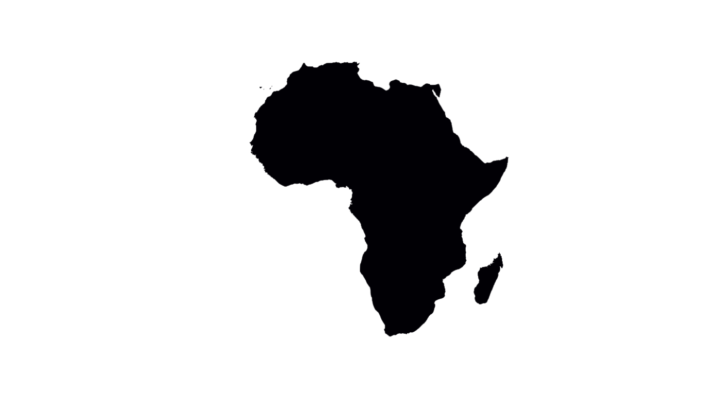

What Do you Know About Africa?
Click on the start button to answer 5 questions about Africa. You have only 60 seconds to answer all questions.
Click on the start button to answer 5 questions about Africa. You have only 60 seconds to answer all questions.